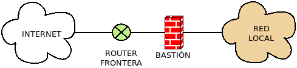

10.2.6.1. Interconexión segura de redes¶
Un aspecto muy importante para salvarguardar la seguridad en las redes es conseguir que éstas se conecten siguiendo estrategias que dificulten el acceso o la monitorización de intrusos. Diviremos la exposición en cuatro estrategias, cada una enfocada a una situación distinta.
10.2.6.1.1. Interconexiones cableadas¶
Dentro de un red LAN cableada lo conveniente es que las comunicaciones circulen exclusivamente entre los dos extremos que pretenden comunicarse. Ello exige:
- Vigilar que no se interponga en algún punto de la red un dispositivo que intercepte el tráfico. Una máquina con dos interfaces de red dispuestas en puente es capaz de llevar a cabo este propósito.
- Evitar las topologías en bus, en las cuales todas las comunicaciones llegan a todos los nodos, de modo que basta con colocar la interfaz de red de uno de los nodos en modo promiscuo para recibir todas las comunicaciones. En las redes antiguas, en las que se disponían concentradores (o hubs) para interconectar los nodos, ésta era la topología. Afortunadamente, en las redes modernas los hubs se han sustituidos por switches y las topologías han pasado a ser en estrella (o en estrella extendida), lo cual evita este problema.
- El uso de switches evita lo anterior y, si son gestionables, pueden
contribuir a un mejor control de la red:
- Pueden deshabilitarse los puertos que no se piensan usarse a fin de que conectar un dispositivo no autorizado a uno de ellos no tenga efecto.
- Pueden definirse distintas VLANs (IEEE 802.1Q), que permiten definir distintas redes lógicas dentro de una misma red física. Esto asegura que los dispositivos conectados a puertos de un switch asociados a una determinada VLAN, no puedan comunicar con dispositivos conectados a puertos del mismo switch asociados a otra distinta, a menos que se encamine en la capa de transporte el tráfico entre ambas redes lógicos. En consecuencia, el uso de VLANs nos asegura que el dispositivo conectado a una toma sólo podrá pertenecer a la red que se le asignó a la toma, aunque haya varias redes lógicas compartiendo el mismo switch.
- Puede asociarse una MAC o un conjunto de MACs a cada puerto del switch a fin de que no puedan conectarse dispositivos distintos a los predefinidos.
- Dado que falsear la dirección MAC es tricial, puede utilizarse un servidor RADIUS que autentica a los dispositivos mediante usuario y contraseña.
Ver también
Para saber cómo crear y gestionar interfaces virtuales VLAN consulte el epígrafe dedicado a las VLAN en Linux.
10.2.6.1.2. Seguridad perimetral¶
La seguridad perimetral de una red es el conjunto de mecanismos de defensa que se establecen en la zona de frontera con la red externa (generalmente internet) a fin de evitar intrusiones. Sus principales objetivos son:
- Proporcionar un único punto de conexión con el exterior.
- Limitar las conexiones a aquellos tráficos autorizados hacia sus respectivos nodos.
- Redirigir las peticiones externas hacia los servidores adecuados.
- Ocultar la estructura y los servicios internos de la red.
- Auditar el tráfico circulante.
En esta red perimetral que hace de frontera se disinguen distintos elementos:
- Perímetro
- Se denomina así a la propia frontera fortificada de la red. Es en él donde se colocan algunos de los servicios que trataremos más adelante: cortafuegos, proxies, sistemas de detección de intrusos.
- Router de frontera
- Es el router directamente expuesto a internet.
- DMZ
La zona desmilitarizada es aquella red local del perímetro, situada entre la red externa (internet) y el resto de redes locales que habitualmente aloja servidores y que se caracteriza por permitir conexiones a sus servidores tanto desde la red externa como la interna, pero que permite desde ella sólo conexiones al exterior. En consecuencia, un intruso que lograra penetrar en ella aprovechando la vulnerabilidad de algunos de sus servicios, veria restringido su acceso al resto de redes locales.
Advertencia
En puridad, el acceso a una DMZ requiere un bastión que establezca comunicaciones en la capa de aplicación, o sea, mediante el uso de proxies (véase el concepto de bastión), pero es muy común la implementación de la pseudo DMZ dibujada.
- Bastión
Es un servidor especialmente diseñado para hacer frente a ataques externos que dispone un servicio proxy accesible desde el exterior. A diferencia del cortafuegos que establece una filtrado en capa 3 y 4, los bastiones son pasarelas a nivel de capa de aplicación. Existen distintas arquitecturas, según se disponga el bastión para proteger a la red interna:
- Screening router
Es aquella en que el propio router de frontera hace la labor de bastión y la tarea de filtrar paquetes. Por lo general, se limita a redirigir el tráfico según su tipo hacia el servidor adecuado. por lo que no existe ningún servicio de proxy.
- Dual-homed host (Máquina de doble interfaz)
En este caso el bastión se interpone entre el router y la red interna, pero impidiendo por completo el encaminamiento de paquetes y obligando a que cualquier comunicación se lleve a cabo a través de proxies.
- Screened host (Máquina apantallada)
Es aquella en que el bastión se sitúa dentro de la red externa y el router implementa el cortafuegos, de suerte que los clientes externos sólo puede conectar con el bastión, pero no con el resto de la red. El acceso de los clientes internos a internet puede hacerse:
- Directamente atravesando el router.
- Mediante proxy a través del bastión.

- Screened subnet (Subred apantallada) o DMZ
Es aquella en que el bastión se incluye dentro de una red perimetral intermedia separada de la red interna por un router. En esta red existirán otro servidores accesibles desde el exterior a través del proxy que proporciona el bastión, aunque es común (en detrimento de la seguridad), que se elimine el bastión y el router externo redirija directamente a los distintos servidores (este es el caso dibujado al tratar más arriba la DMZ).
10.2.6.1.3. VPN¶
Las VPN (redes privadas virtuales) permiten la interconexión segura de dos redes locales remotas.
Ver también
Siga la introducción teórica contenida la sección sobre VPN contenida en el manual.`
10.2.6.1.4. Redes inalámbricas¶
En las redes inalámbricas el medio de comunicación es el vacío, al cual, a diferencia del cable, puede acceder cualquiera dispositivo lo suficientemente cercano para recibir la señal. Por ese motivo, la comunicación se cifra gracias a lo cual terceros será incapaces de entender la comunicación, aunque sean capaces de interceptarla. En estas redes, las estrategias para lograr la seguridad de la red inalámbrica son:
- La protección física de los puntos de acceso, a fin de que personas no autorizadas no puedan manipularlos.
- La protección lógica de los puntos de acceso mediante un mecanismode autenticación, a fin de que personas no autorizsadas no puedan modificar ni consultar su configuración.
- En caso de que un mismo punto de acceso genere distintas SSID, esto es, distintas redes inalámbricas, que estas se aislen lógicamente incluyendo cada una dentro de una VLAN distinta.
- Proteger el acceso a la red wifi.
Centraremos nuestro interés en este último punto, ya que los tres anteriores son comunes a redes cableadas.
Protección del acceso
Los mecanismo más habituales para la protección del acceso a la red inalámbrica son:
El filtrado MAC que consiste en fijar la lista de direcciones MAC que tienen permisos para utilizar el punto de acceso. Esto, sin embargo, no es un mecanismo muy eficaz, dado que cualquier atacante puede capturar paquetes para averiguar la dirección MAC de un dispositivo capaz de conectarse, y falsear la suya para hacerse pasar éste.
La autenticación del acceso que básicamente puede ser:
- Ninguna
Que es el caso de las redes abiertas.
- WEP
La autenticación WEP usa la misma clave para el acceso que para el cifrado de datos. Su escasa seguridad permite la obtención de la clave mediante el análisis criptográfico de paquetes, lo que la hace absolutamente volnerable a intrusos. Estuvo muy extendida, pero sus problemas de seguridad han hecho que haya desaparecio de los dispositivos modernos.
- WPA
El estándar WPA2 usa distintas claves para el cifrado y la autenticación. Para la clave de autenticación, pueden usarse dos estrategias:
- WPA-PSK, en que todos los clientes compartan la misma clave,
- esto es, la misma contraseña de acceso. Consiste en indicar en el punto de acceso cuál es esta contraseña y que cada dispositivo que quiera acceder a la red wifi la incluya en su configuración de acceso. Tiene el inconveniente de que, si se desea modicar, habrá que volver a introducir la clave en todos los dispositivos.
- WPA Enterprise, en que el punto de acceso consulta un servidor RADIUS en donde se ha asignado a cada dispositivo un usuario y una contraseña de acceso. La ventaja de este método es que esas parejas usuario/clave son individuales, por lo que si se desea impedir el acceso de un dispositivo en particular, basta con dar de baja esa pareja en el servidor.
El cifrado de la comunicación que en WPA2 se lleva a cabo mediante algoritmos de clave simétrica TKIP o AES. Las claves en estos cifrados rotan periódicamente para dificultar el análisis criptográfico de los paquetes.
Simplicación del acceso
Para facilitar el acceso a las redes wifi sin necesidad de escribir las complicadas contraseñas de acceso, se ideó WPS que posibilita la configuración automática del acceso para los dispositivos que quieren agregarse a la red inalámbrica. El problema de este mecanismo es que introdujo problemas de seguridad y, además, suele encontrarse activo por defecto. Para desencadenar esta configuración se idearon varios mecanismos:
- WPS PIN que consiste en que en el dispositivo se introduzca un código PIN de 8 dígitos asociado al punto de acceso y que, normalmente, se encuentra escrito en algún punto de su superficie. Este mecanismo, no obstante, tiene una vulnerabilidad que provoca que un atacante pueda obtener tal PIN y, con él, obtener la configuración WPA del dispositivo.
- WPS PBC que consiste en que el punto de acceso dispone de un botón que al pulsarlo permite durante un breve periodo de tiempo (p.e. dos minutos) la configuración automática del acceso en el dispotivo. Obviamente, durante periodo de tiempo el punto de acceso es vulnerable, ya que un atacante tambíén podrá pedir la configuración automática.
- WPS NFC que permite la transferencia de la configuración de acceso al dispositivo si este se situá muy cerca del punto de acceso (hasta 20 cm)
- WPS USB que consiste en guardar las claves en un disco de almacenamiento USB y transferirlas por este método al dispositivo al que se quiere dar acceso.